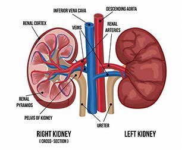
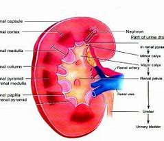
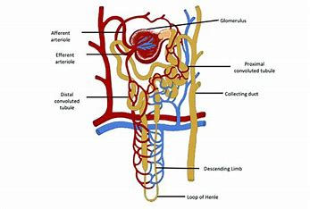
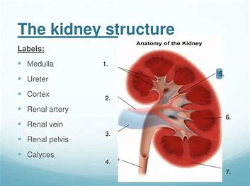
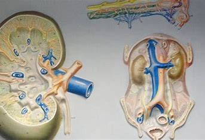

Kidney
The main function of the kidney would be the excretion of water-soluble waste products from our body. The kidney has various filtration, excretion, and secretory functions. Derangement of any of these functions would result in either decreased excretion of waste products and hence their accumulation in the body or loss of some vital nutrient from the body. Based on the level of these excretory products and nutrients in the urine as well as in blood, we could make an accurate calculation to decipher the efficiency of the kidney to undertake its various functions.

External and Internal Features of Kidney
It has a convex and concave border.
Towards the inner concave side, a notch called the hilum is present through which the renal artery enters the kidney and the renal vein and ureter leave.
The outer layer of the kidney is a tough capsule.
On the inside, the kidney is divided into an outer renal cortex and an inner renal medulla.
The hilum extends inside the kidney into a funnel-like space called the renal pelvis.
The renal pelvis has projections called calyces(sing: calyx).
The medulla is divided into medullary pyramids, which project into the calyces.
Between the medullary pyramids, the cortex extends as renal columns called Columns of Bertini.
The kidney is made up of millions of smaller units called nephrons which are also the functional units.

What is the functional and structural unit of a kidney?
The structural and functional unit of the kidney is called the nephron. It consists of two main parts viz. the glomerulus and the tubular system. The glomerulus is composed of Bowman’s capsule and a tuft of leaky blood vessels encapsulated by Bowman’s capsule. The primary purpose of the glomerulus is filtration. The leaky vessels filter into the glomerulus almost all the water, electrolytes, small proteins, nutrients such as sugar etc and excretory products such as urea etc. The filtration is dependent on the size and charge of the particles. The average pore sizes is 8 mm and hence particles of only smaller size will pass through. Also, the basement membrane carries a negative charge, hence preventing negatively charged particles from passing through. The tubular system is responsible for the reabsorption of most of the water, electrolytes, and nutrients as well as the excretion of the remaining nutrients by means of secretion into the tubules. These tubules are responsible for the concentration of urine.

Components of Kidney Function Test
The components of the Kidney function test could be broadly divided into two categories.
The tests that are part of the Kidney Function test panel are:
Urine examination
Serum Urea
Blood urea nitrogen (BUN)
Calcium
Serum creatinine
Dilution Test

Urine Examination
This examination consists of a physical examination where the colour, odour, quantity, specific gravity etc of the urine is noted. Microscopic examination of urine is done to weed out any pus cells, red blood cells (RBC) casts, Crystals etc.
Serum Urea
Urea is the end product of protein catabolism. The urea is produced from the amino group of the amino acids and is produced in the liver by means of the Urea cycle. Urea undergoes filtrations at the glomerulus as well as secretion and reabsorption at the tubular level. The rise in the level of serum urea is generally seen as a marker of renal dysfunction especially glomerular dysfunction. Urea level only rises when the glomerular function is reduced below 50%. The normal serum urea level is between 20-45 mg/dl. But the level might also be affected by diet as well as certain non-kidney related disorders. A high protein diet might increase the blood urea level. Similarly, a low protein diet might decrease blood urea level.
Other causes of protein metabolism such as any hyper metabolic conditions, starvation etc also result in increased blood urea levels. Similarly, the level of urea might also be decreased in case of hepatic injury. So even though blood urea is not an excellent marker of renal dysfunction as it rises quite late in the dysfunction and its rise is also not exclusive to kidney dysfunction, for practical purposes, serum urea level is still one of the most suggested tests and forms an important place of the kidney function test.

Blood Urea Nitrogen (BUN)
Sometimes the Serum urea level is expressed as blood urea nitrogen. BUN can be easily calculated from the serum urea level. The molecular weight of urea is 60 and it contains two nitrogen atoms of combined atomic weight of 28. Hence the contribution of nitrogen to the total weight of urea in serum is 28/60 that is equal to 0.47. Hence the serum urea levels could be easily converted to BUN by multiplying it by decimal 0.47. A rise in blood nitrogen level is known as azotemia.
Calcium
This test is used to measure the amount of Calcium in the blood cells, not the presence of calcium in the bones. The body needs calcium to build and fix bones and teeth, help nerves work, make muscles contract etc. Also, it is needed for the formation of healthy bones and teeth. Most of the cells in the body need calcium to work properly. Raised calcium levels might cause headaches, nausea, sore eyes, aching teeth, itchy skin, mood changes, and confusion.